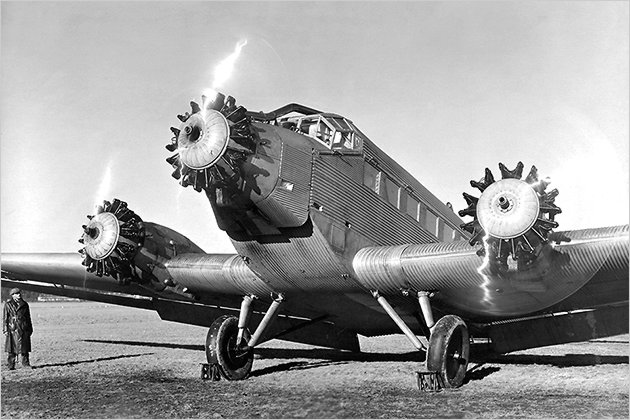
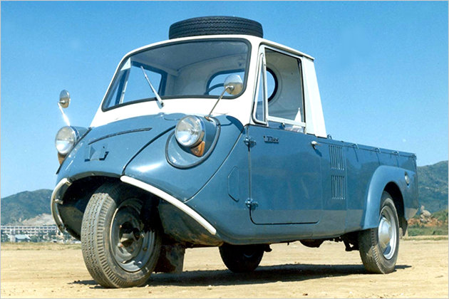

| Страна | Марка | Дата основания | ||
|---|---|---|---|---|
| День | Месяц | Год | ||
| Америка | Ford | 16 июня 1903 | ||
| Chevrolet | 3 ноября 1911 | |||
| Япония | Toyota | 28 августа 1937 | ||
| Nissan | 26 декабря 1933 | |||
| Subaru | 1954 | |||
| Suzuki | Октябрь 1909 | |||
| Корея | Hyundai | 29 декабря 1967 | ||
| KIA | 9 июня 1957 | |||
| Германия | Mercedes-Benz | 28 июня 1926 | ||
| BMW | 7 марта 1916 | |||
Изначально фирма "BMW" не занималась производством и выпуском автомобилей. На первом этапе эта Немецкая компания
выпускала авиационные двигатели для различных воздушных судов.

В 1923 году "BMW" представила свой первый мотоцикл. А вот автомобильная деятельность компании "BMW" началась с 1928
года, когда она приобрела лицензию у компании "Austin Seven" на производство малолитражного автомобиля марки Dixi.
Корейская автофирма "Kia" была основана в 1944 году и носила название "Kyongseong Precision Industry". Но в самые
первые годы компания занималась производством велосипедов. В качестве же непосредственного автопроизводителя
компания начала свою деятельность только в 1952 году и получила для себя имя "Kia Industry Company".
Основной моделью фирмы "Kia" в первые годы стал трехколесный мотоцикл-пикап (мотоколяска). Это транспортное средство
получило популярность в Корее в начале 1961 года.

Первый же четырехколесный автомобиль этой фирмы сошел с конвейера в 1972 году. Им стал грузовик получивший название-
Titan.
В 1973 году компания "Kia" спроектировала и начала выпуск первого в своей истории бензинового двигателя. Спустя год
этот мотор начал устанавливаться на первый легковой автомобиль марки Kia, получивший имя- Brisa.